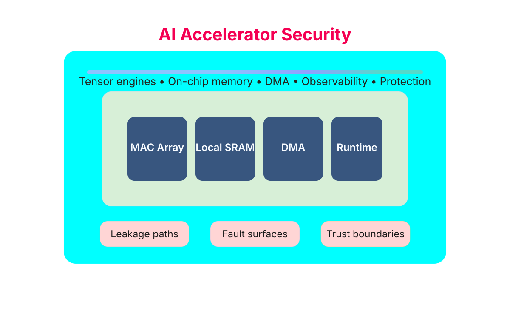
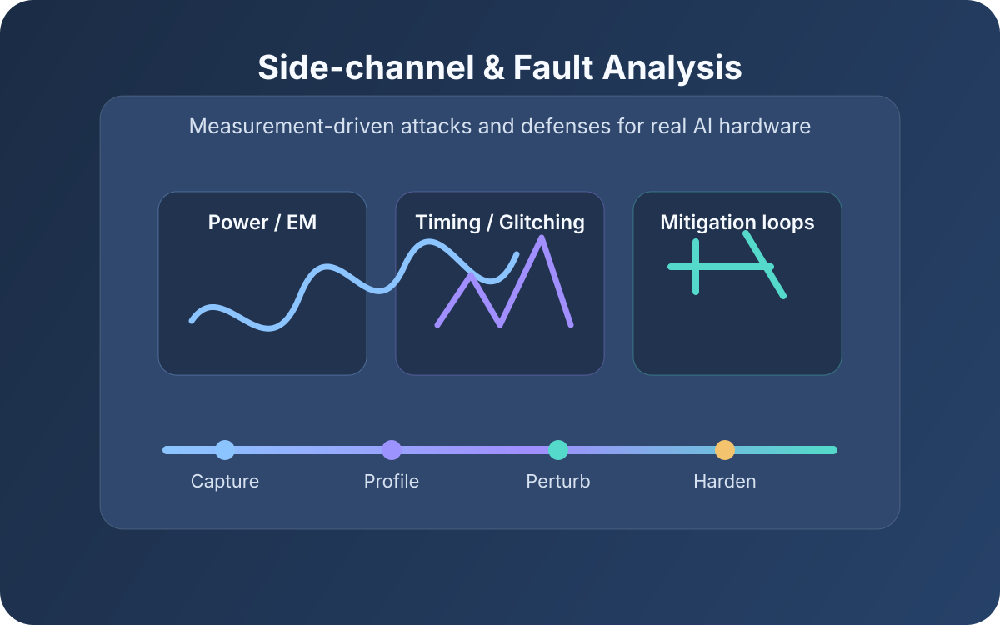
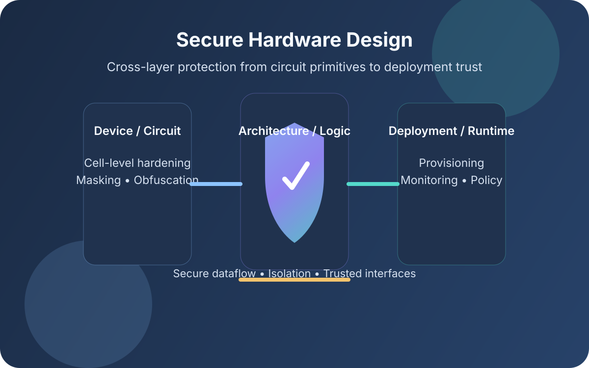

Brojogopal Sapui
AI security researcher working across hardware trust, accelerator security, edge intelligence, and trustworthy physical AI deployment.
A cross-layer view of trustworthy AI systems
Brojogopal Sapui recently completed his Ph.D. in Hardware Security at the Karlsruhe Institute of Technology (KIT), graduating magna cum laude. His research centers on securing emerging AI hardware accelerators, with a strong emphasis on side-channel analysis, fault injection, secure execution, and hardware-aware trust mechanisms for modern intelligent systems.
He currently works as a Research Scientist at NaMLab gGmbH in Dresden, where he leads and contributes to rFET-based security-enabling hardware building blocks, secure test-chip design, and cross-layer protection strategies for future AI and hardware-root-of-trust systems.
Current role, background, and CV access
Research Scientist, NaMLab gGmbH, Dresden
Karlsruhe Institute of Technology (KIT)
AI accelerator security, hardware trust, and implementation-aware defense
EDA flows, FPGA platforms, side-channel measurement, and security validation
- Ph.D. in Hardware Security, KIT, Germany
- Current role: Research Scientist, NaMLab gGmbH, Dresden
- Focus on AI accelerator security, hardware trust, and physical implementation risks
- Hands-on experience across FPGA, embedded platforms, EDA flows, and security validation
Technical strengths at a glance
These are the main technical directions that shape the perspective of this portal and the type of problems I enjoy working on most.

AI accelerator security
Security evaluation of CNN, SNN, HDC, and other emerging AI accelerators under realistic implementation, deployment, and physical-access assumptions.

Side-channel and fault analysis
Leakage modeling, measurement-driven evaluation, automated ChipWhisperer and oscilloscope-based validation, and countermeasure development for hardware AI targets.

Secure hardware design
Cross-layer design of trusted execution paths, secure accelerator architectures, information-flow awareness, and hardware primitives for trustworthy AI deployment.
Research and engineering path
A compact view of the environments and themes that shaped this portal’s cross-layer perspective on AI security.
KIT: Ph.D. on hardware security for AI
Built secure execution and validation flows for AI and cryptographic accelerators, with extensive work on fault analysis, side-channel attacks, and implementation-aware defenses.
NaMLab: secure emerging hardware
Working on rFET-based security primitives, secure layout and tape-out flows, and device-to-circuit strategies that strengthen hardware trust for future intelligent systems.
Earlier industrial and research roles
Experience spanning automotive embedded security at Wipro, quantum randomness and cryptography at ISI Kolkata, and PUF security research at IIT Kharagpur.
Continue through the research portal
Move from the profile view into the structured research map, the highlighted trending topics, or the resource hub for deeper reading.